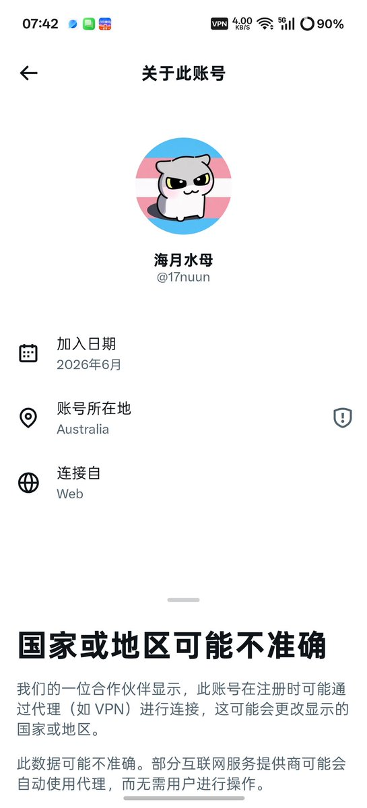

无敌的小白羽大人🍥
@yuerQwQ
cs唐毓文
我说跨圈真是没救了
我才不要当mtf😭
我想当女生😭

櫻川由奈🏳️⚧️Sakura🍥
@Xiaoyi_0324
tyw啊tyw 你说我说你点什么好。。。
江山难改 本性难移 这句话的含金量还在上升
先不说你给人家送进去之后炒作说给人家送到扭转 你现在又开始炒作给人家蒸馏成skill是想tm干什么？吃人血馒头这一块是真有你的 不过也是够厉害的😂隔天就被封号了 获得报应了
但是 我要怀疑一个点 那就是 https://t.co/o8BL34wGvG https://t.co/B95uuMQ7Dy